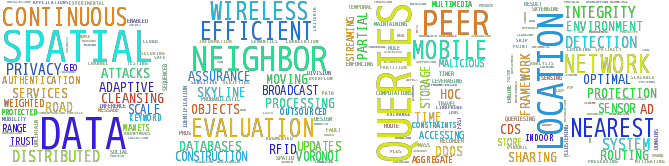

Data Science Laboratory (DS Lab) at Auburn University is directed by Dr. Wei-Shinn (Jeff) Ku. It is located at the second floor of Shelby Center for Engineering Technology room 2307. The mission of DS Lab is to develop novel techniques in data management, data analytics, knowledge discovery, data mining, cyber security and beyond.
Sponsors